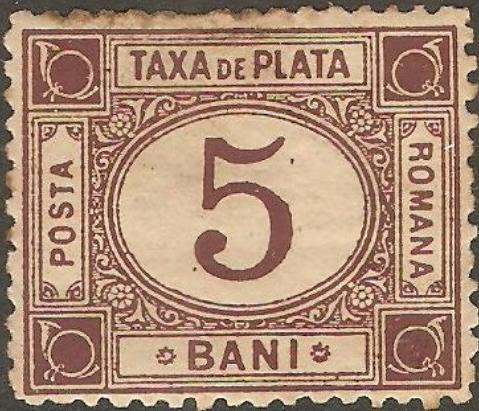
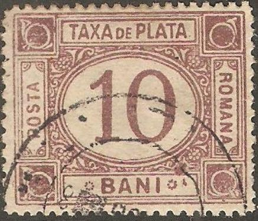
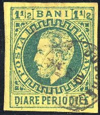
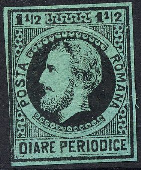
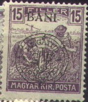
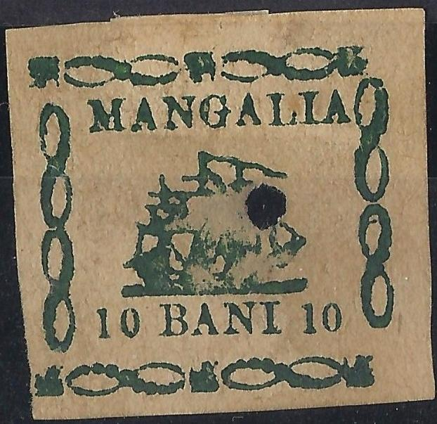

{kind=link}



Note: on my website many of the
pictures can not be seen! They are of course present in the
catalogue;
contact me if you want to purchase it.
2 b brown 2 b green (1887) 5 b brown 5 b green (1887) 10 b brown 10 b green (1887) 30 b brown 30 b green (1887) 50 b brown 50 b green (1890) 60 b brown 60 b green (1890)
Forgeries exist (even in several types), according to 'Focus on Forgeries' by Varro Tyler. In the genuine stamps, there is an ornament consisting of dots to the left of the word 'BANI'. This ornament consists of a circle of dots, with an additional dot inside it, which is, however, not placed in the center, but more to the left. Forgeries don't have this additional dot. Also, in the forgeries the 'P' of 'PLATA' slants to the right

Two genuine stamps

Forgeries.

60 b blue Fournier forgery as it can be found in the Fournier
Album; the perforation is printed. I don't think this forgery was
actually intended to be sold as a forgery, but merely to
illustrate his pricelists.
2 b blue 5 b blue 5 b black (1918) 10 b blue 10 b black (1918) 15 b blue 20 b blue 20 b black (1918) 30 b blue 30 b black (1918) 50 b blue 50 b black (1918) 60 b blue 60 b black (1921) 1 L black (1921) 2 L blue 2 L black (1921) 3 L black (1923) 6 L black (1923)

5 b green 10 b red
Between 1896 and 1919, a Romanian post office was operating in Constantinopel and Romanian stamps were used.


All the cancels I have seen on this issue were in violet
"POSTA-ROMANA COSPOLI" with date in the center.
10 p on 5 b blue 20 pa on 10 b green 1 Pi on 25 b violet
Value of the stamps |
|||
vc = very common c = common * = not so common ** = uncommon |
*** = very uncommon R = rare RR = very rare RRR = extremely rare |
||
| Value | Unused | Used | Remarks |
| All values | *** | *** | |


Two forged overprints as they can be found in 'The Fournier Album
of Philatelic Forgeries'
Forged Fournier cancel (reduced size) "POSTA-ROMANA 23 APR
896 COSPOLI"; probably used together with forged overprints.

Bogus value:
('30 PARA 30' on 15 b)
5 b green (postage stamp) 5 b green (semi fiscal stamp, 'timbru de ajutor') 10 b red 15 b brown 25 b blue (overprint red) 40 b brown (overprint red)
Value of the stamps |
|||
vc = very common c = common * = not so common ** = uncommon |
*** = very uncommon R = rare RR = very rare RRR = extremely rare |
||
| Value | Unused | Used | Remarks |
| 5 b green | * | * | Postage stamp |
| 5 b green | ** | ** | Timbru de Ajutor |
| 10 b | * | * | |
| 15 b | * | * | |
| 25 b | * | * | |
| 40 b | * | * | |
Forgeries exist of these overprints, the second "T" of "CONSTANTINOPEL" has its upper horizontal stroke separated from the vertical stroke in the genuine stamps. In the forgeries it is connected. For more information see: http://home.no.net/bhb1/ro-fk1e.htm.
Inscription "POSTA ROMANA DIARE PERIODICE":


(Reduced size)
25 b red
Exists with watermark arms, 'PR' or without watermark.
Value of the stamps |
|||
vc = very common c = common * = not so common ** = uncommon |
*** = very uncommon R = rare RR = very rare RRR = extremely rare |
||
| Value | Unused | Used | Remarks |
| 25 b | * | * | Cheapest type |
The first Romanian postal card was issued in 1873. When King Carol I celebrated 25 years since he was on the throne, Romania issued the first commemorative postal card in the world. It was valid for postage only three days (sorry, no picture available yet).
Examples of cuts of later cards and envelopes:


The following values exist: 1 L grey, 2 L yellow and 5 L blue. The used examples are cancelled by a rectangular postmark and bear also pencil marks (see the 1 L stamp for an example).
The values 25 b brown and 50 b blue exist.
In 1916, Romania declared war against Germany and Austro-Hungary. After the war, Transylvania and Bucovina, became part of Romania. All the Hungarian stamps found at post offices in Transylvania were overprinted with Romanian currency and were valid for postage in the whole of Romania until 1922. The overprinting was done in Cluj and Oradea in 1919, the Cluj issue having the currency inscribes in “BANI” and “LEI”, and the Oradea one in “Bani” and “Lei”. The quantity of the overprinted stamps varies between 100 and 1,700,000 depending on how many complete sheets were found. Be careful, forgeries exist!

In 1919, Romanian troops entered Hungary to fight against the bolshevists. For several months Romanian soldiers helped the Hungarian people with food and clothes. Several Hungarian stamps were overprinted with the text “Zona de ocupatie românã”, and new stamps also issued. However, it seems this was done only for philatelic purposes and most of these stamps known today are in mint condition. Forgeries are known to exist as well as several private issues. Example:
Click here, for these and other Hungary local overprints.
5 b green and black 10 b yellow and black 15 b red and black 20 b lilac and black 25 b blue and black (also exists imperforate)
5 b brown and black 5 b green and black (1875) 5 b lilac and black (1890) 10 b blue and black 10 b brown and black (1878) 10 b red and black (1890) 15 b grey and black 15 b blue and black (1875) 15 b brown and black (1890) 20 b red and black 20 b grey and black (1875) 25 b green and black 25 b red and black (1875) 25 b orange and black (1890) 30 b green and black (1898)
Postal stationery exists with similar designs (parcel cards).
5 b , 10 b, 15 b, 20 b, 25 b, 30 b (all in blue
and black), 35 b, 40 b, 45 b, 50 b, 1 L, 1 1/2 L (all in brown
and black), 2 L, 2 1/2 L, 3 L, 3 1/2 L, 4 L, 4 1/2 L (all in grey
and black), 5 L, 5 1/2 L 6 L, 6 1/2 L, 7 L, 7 1/2 L (all in green
and black), 8 L, 8 1/2 L, 9 L, 9 1/2 L, 10 L (all in red and
black).
The values 10 b, 20 b, 30 b, 40 b, 50 b, 1 L, 2 L, 3 L, 4 L, 5 L,
6 L, 7 L, 8 L, 9 L and 10 L were re-issued in 1886 (without value
indication?).
10 b brown (inscription 'FACTURI CHITANTI')
The 10 b brown stamp exists with 'BUKOVINA' overprint (1919). The 10 b also exists with overprint 'MF' (1919).
30 b grey 50 b grey 1 L brown 1 L red 5 L brown
All the above stamps (except 50 b) exist with overprint 'MF' (1919).
10 c brown
(Reduced size)
30 b brown 50 b brown 1 L blue 2 L blue 3 L blue 4 L blue 5 L blue 10 L blue 20 L blue 30 L blue 40 L blue 50 L blue
More values were issued in 1922.
For fiscal stamps with overprint 'M.V.I.R.' or 'Gultig 9.Armee', see in Cd 1 under German occupation of Rumania (during World War I).
Besides the 10 b red stamp shown above, I have also seen the value 10 b green
Stamps with inscription "MANGALIA" are Romanian fiscal stamps, once considered to be bogus (or could these be Moroiu products perhaps?).

Mangalia fiscal stamp.
{kind=link}
{kind=link}
{kind=link}